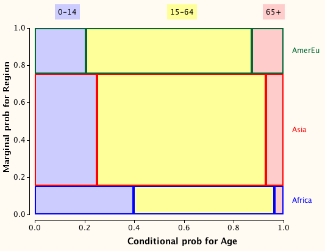

Definition
A collection of events, \(A_1, A_2, \dots, A_k\), is called a partition of the sample space if the events are mutually exclusive and their union is the complete sample space,
\[ A_1 \cup A_2 \cup ... \cup A_k = S \]\(A\) and \(\overline{A}\) are the simplest kind of partition of the sample space.
From the axioms of probability, it can be proved that
\[ P(A_1) + P(A_2) + ... + P(A_k) = 1 \]Proportional Venn diagrams
If there are two partitions of the sample space, Proportional Venn diagrams can be used to show the marginal probabilities for one partition and the conditional probabilities for the other.

The joint probability for any combination of row and column values is the area of the corresponding rectangle.